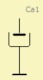

Compliance (Acoustic)
| Home | LE-Part | Acoustic |
This component implements an acoustic compliance in the network. This element is used if the wavelength is very large compared to the dimensions. The acoustic compliance has two-poles, one of which always being grounded.
Parameters
 |
| Caption | String | Name of component |
| Formula | String | Formula of parameters |
| Ca | m3/Pa | Acoustic compliance |
The acoustic admittance is
Ya = jω·Ca
To understand the acoustic compliance, imagine an air-volume being compressed,
but not moved. In other words, compression without acceleration
indicates acoustic compliance. The dual case, i.e. acceleration,
would be an acoustic mass.
The compression is indicated by the symbol.
Formula
The name of the parameters are equal to the formula-identifiers:
|
Derivation
The acoustic compliance is derived from a duct, which is closed at one end so that the velocity of the air-particles is zero at the closing wall. Ignoring cross-modes the acoustic impedance of such a duct would be:
Za = -jρc/SD·cot(k·L)
with air-density ρ, speed of sound c, cross-sectional area of the duct SD, wave-number k = ω/c and length of the duct L. For small values of k·L, the cotangent can be approximated by the first two terms of the Taylor series:
cot(k·L) = 1/(k·L) - 1/3·k·L - 1/45·(k·L)3 - ...
The acoustic impedance Za then becomes approximately:

with volume of the closed duct Vb, acoustic compliance Ca, acoustic mass Ma'. This approximation applies for closed ducts with a length approximately L < λ/7. The acoustic compliance Ca is accordingly:
Ca = Vb/(ρ·c2)
Series Mass
 |
The acoustic mass Ma' is in series with Ca and is accordingly:
Ma' = 1/3·L·ρ/SD
Note, that the value of the acoustic mass Ma’ is 1/3rd of the acoustic mass of an open duct (see Mass) and is switched in series with Ca as sketched in the picture to the right.
Note, that Ma' stems from the lumped element derivation of the duct. Ma' is always present but may vary in value depending on the actual shape and size of the cavity. In general the Compliance component is not intended to simulate acoustic ducts, therefore Ma' is not part of its model. For higher frequencies components such as Duct and Enclosure are better suited, both of which make use of the formula using the cotangent- or tangent-function.

The above curves compare the reactance of a compliance to a closed duct. At low frequencies the compliance-only model serves as a good approximation. At approx 200 Hz the reactance has a zero which is captured by the duct-model and the Ma' model. At higher frequencies the simple lumped element models do not show the resonances of the duct.
Damping Material
If the volume of the acoustical compliance is filled with a light porous material, the acoustic compliance Ca is often found to have increased by some percent. What is the reason for this?
If a gas is compressed very rapidly, its local temperature increases and, vice versa, when it relaxes, its temperature is reduced. For frequencies in the audio range, the air compression is adiabatically:
p·Vbχ = constant
with adiabatic exponent χ = 1.4. The equation for the compliance can also be written in the following form:
Ca = Vb/(χ·p0)
with static air-pressure p0 = 101.33 kPa at zero altitude and T = 20°C.
If the volume Vb is filled uniformly with a material, which compensates for the rapid temperature changes of the sound wave by absorbing the heat, the changes of state would be more or less isothermal. The adiabatic exponent is then reduced to χ = 1.0 and the compliance is larger.
Damping material has further effects. Beside changing the thermal transfer the added material also increases damping and the effective acoustical mass.